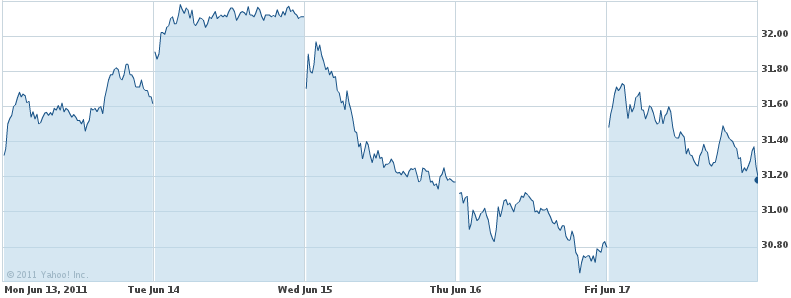
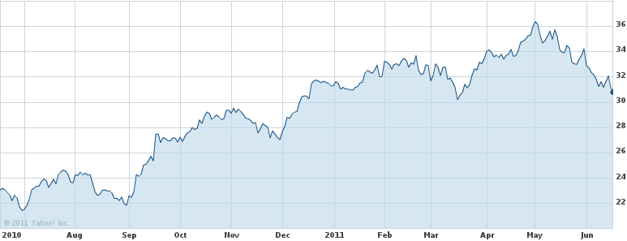
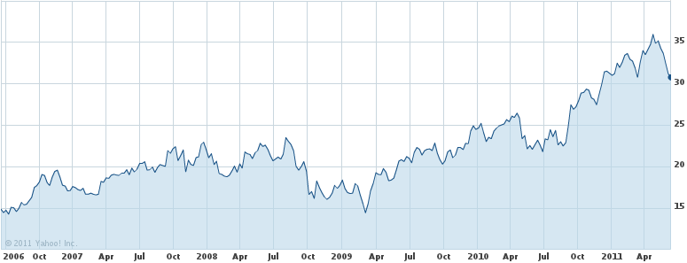
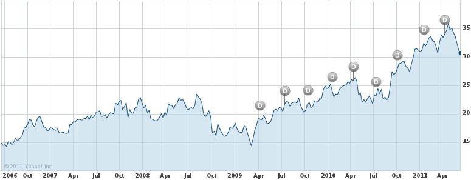
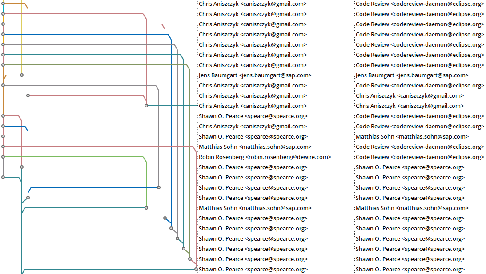
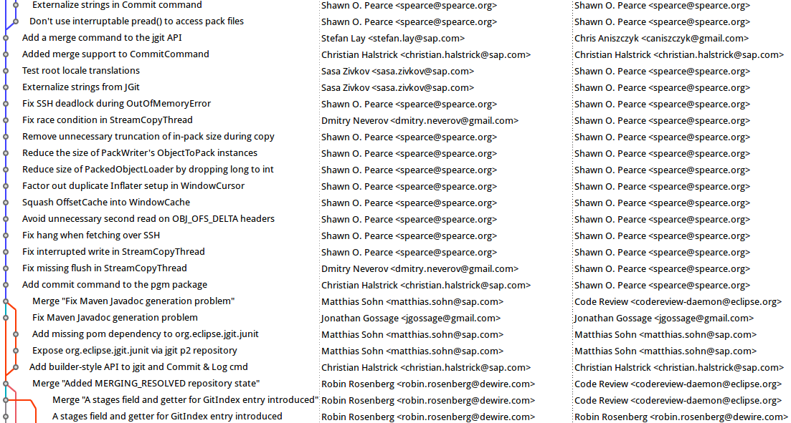
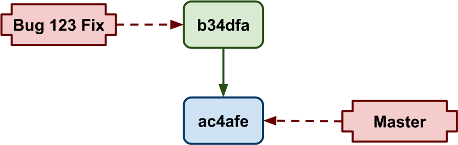
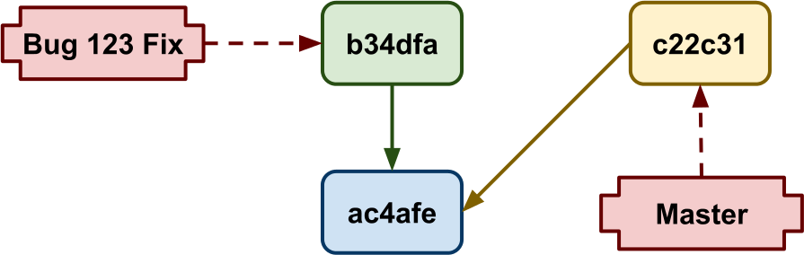
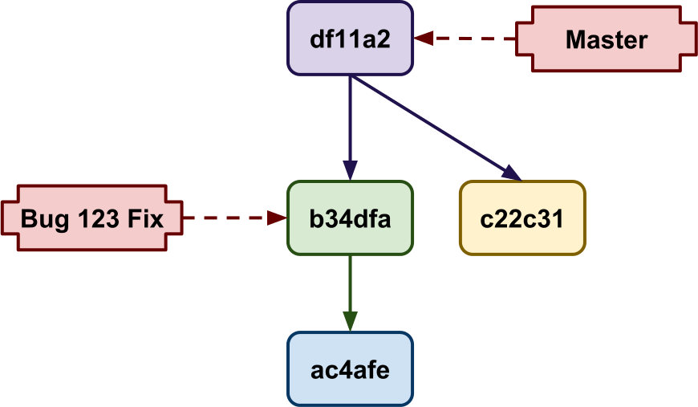
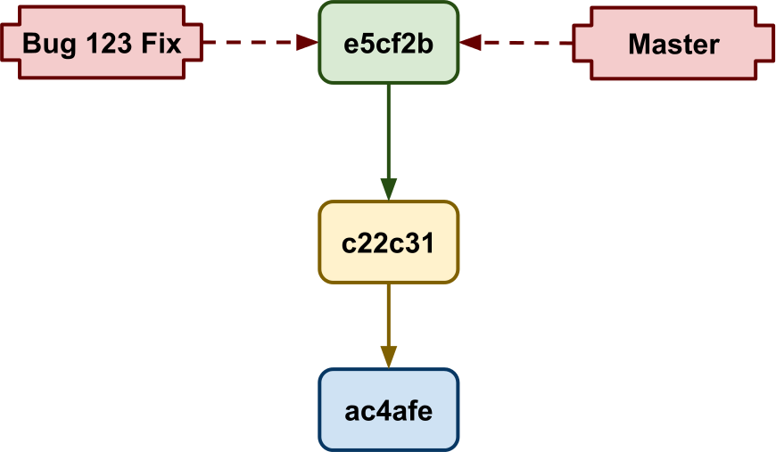

slides
space, →
next slide
←
previous slide
d
debug mode
## <ret>
go to slide #
c
table of contents (vi)
f
toggle footer
r
reload slides
z
toggle help (this)
loading presentation...
Why Git is better for peer code review
JAX
June 22nd, 2011
Kevin Sawicki
GitHub developer
@kevinsawicki
kevinsawicki/jaxconf-2011
How are developers like stock traders?
31.28
31.28 (
0.39
)




History
is important
sends a message
is multi-faceted
affects our actions
Code review
Scrutinize potential history
This?

Or this?

Git Commits
Modular
Malleable
Connectect




Git Commits
Author
and
committer
Message conventions
Eclipse
Git
Gerrit
Hudson
Goals
Take contributions as commits
Build all contributions
Review all changes
Developer 1
Creates a topic branch
Commits a fix
Pushes commit to Gerrit
Hudson
Builds commit
Votes based on outcome
Developer 2
Pulls commit into topic branch
Adds unit tests
Pushes commits to Gerrit
Hudson
Builds commit
Votes based on outcome
Developer 3
Commits patch from Gerrit
Review history stored in Git notes
Git
Locally the way
you
want
Remotely the way your
team
wants it
Centralized failures
Commits aren't movable
Commits lack dependencies
Noisy branching
No history preview
Conclusion
Use Git
Perform code review
Make better history